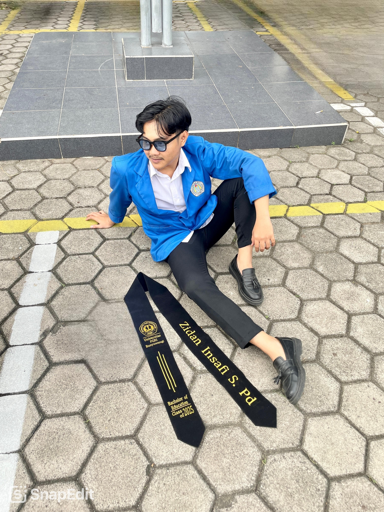

Menyiapkan pengalaman reflektif...
Sebuah dokumentasi reflektif atas perjalanan akademik dan profesional saya selama Program PPG Prajabatan — bukan sekadar kumpulan artefak, melainkan proses berpikir yang sadar, terstruktur, dan bertumbuh.

Saya mempercayai bahwa pendidikan Indonesia yang bermutu lahir dari ruang kelas yang reflektif, inklusif, dan kontekstual — di mana setiap pembelajaran dirancang bukan untuk menghafal, melainkan untuk menumbuhkan kesadaran berpikir dan keberpihakan pada siswa.
Menjadi guru yang mendidik dengan kesadaran — memahami siapa yang diajar, mengapa materi diajarkan, dan bagaimana pembelajaran itu mempengaruhi cara siswa memandang dunia.
Semester pertama adalah fase pelembutan fondasi. Saya belajar bahwa menjadi guru bukan sekadar menguasai materi, melainkan membangun kesadaran tentang siapa yang saya didik dan bagaimana saya mendidik mereka.
Selama mengikuti PPG Prajabatan, saya menemukan bahwa kesenjangan terbesar dalam diri saya bukanlah penguasaan materi, melainkan kemampuan untuk reflektif. PPG mengajarkan saya bahwa guru yang baik adalah guru yang terus-menerus mempertanyakan praktiknya sendiri.
Setelah PPG, saya melihat pendidikan Indonesia dengan lensa yang lebih realistis sekaligus berharap. Setiap ruang kelas adalah titik intervensi, dan setiap guru adalah aktor perubahan yang tidak menunggu kebijakan sempurna untuk mulai mendidik dengan baik.
Saya berkomitmen menjadi guru profesional melalui tiga upaya: membangun praktik refleksi rutin, mengembangkan diri melalui riset tindakan kelas, dan aktif berkolaborasi dalam komunitas guru untuk mendorong perubahan sistemik dari level mikro.
Platform Refleksi Pembelajaran Berbasis Visual untuk Guru Muda. Gagasan lahir dari observasi selama PPL: banyak guru muda kesulitan melakukan refleksi pembelajaran karena tidak ada ruang terstruktur yang mudah diakses. Saya merancang prototipe aplikasi web minimalis dengan jurnal refleksi 4C yang dapat diisi dalam 5 menit setelah mengajar.
Memulai setiap satuan pembelajaran dengan memetakan profil siswa, memilih pendekatan yang sesuai, dan menyusun asesmen autentik yang mengukur pemahaman, bukan sekadar ingatan.
Mengenal setiap siswa sebagai individu — bukan sebagai angka di buku nilai. Membangun rutinitas sapaan, mendengarkan tanpa menghakimi, dan menciptakan ruang kelas di mana gagal adalah bagian dari belajar.
Bergabung dengan komunitas guru, menjalankan riset tindakan kelas minimal satu siklus per semester, dan terbuka untuk dievaluasi serta memberi evaluasi. Profesionalisme adalah praktik harian.